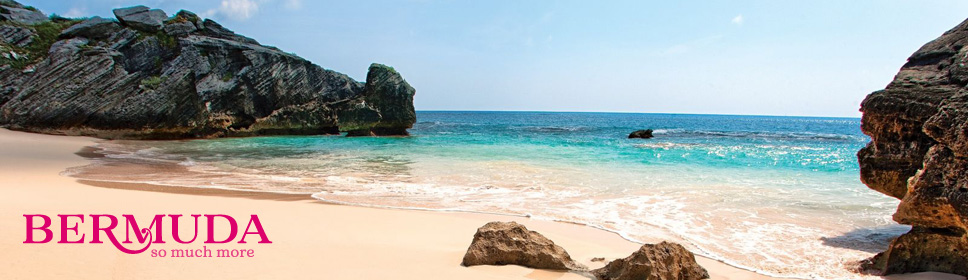

ISOLE BERMUDA
SERVIZI OFFERTI DA DESTINATIONS
Rappresentanza Ente del Turismo delle Isole Bermuda in Italia, Media & Public Relations, Gruppi & Viaggi Incentive, Advertising e Online Marketing.
A migliaia di km a nord delle Bahamas e dai Caraibi, in un tratto dell'Oceano Atlantico di rara bellezza e a poco meno di due ore di volo da New York,
si trovano le Isole Bermuda.
Composte da circa 180 isolotti uniti da ponti, che le trasformano in un'unica grande oasi, e suddivise in nove caratteristici quartieri (parish),
le Isole Bermuda sono caratterizzate da spiagge rosa spettacolari, una vegetazione lussuriosa e una fauna unica.
Isole tuffate in un mare turchino, orlate di spiagge dorate e protette dalla barriera corallina dove anche l'inverno è una calda primavera e i Bermudiani,
con i simpatici calzoncini indossati sotto giacche impeccabili, sembrano sorridere perennemente alla vita.
Le Isole Bermuda sono raggiungibili in aereo con voli giornalieri British Airways, via Londra, con partenze da Milano, Bologna, Pisa, Venezia, Roma, Catania, Verona,
Torino, Napoli Brindisi e Cagliari. In alternativa, da New York e dalle altre città degli Stati Uniti orientali da cui distano poche ore di volo.
.